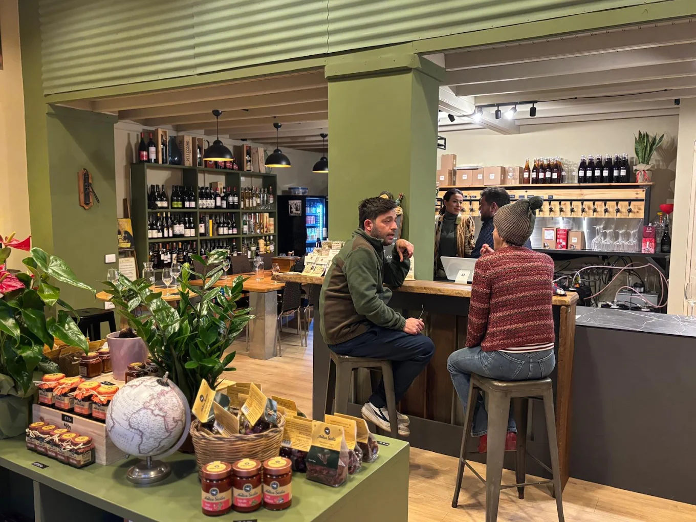
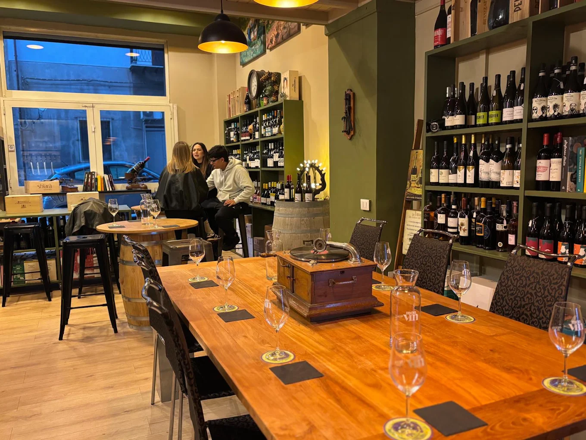

Divino is not merely a bar; it is an interrogation of the Sicilian soil. Our urban cellar holds the secrets of volcanic slopes and ancient coastal vines, presented in a space designed for deep contemplation.
"Our mission is to bridge the gap between the rugged, fertile volcanic peaks of Mount Etna and the refined, salty breeze of the Tyrrhenian coast."
Curated flights for the discerning palate.
A deep dive into Etna’s basaltic terroirs. Taste the ash, the height, and the age.
Sun-drenched Nero d’Avola and Cerasuolo, honoring the ancient Mediterranean traditions.
Refreshment from the shores. Grillo, Zibibbo, and salty notes of the northern coast.
Explore our most common questions about the tasting experience, the wines we serve, and how Sicily’s terroirs shape every glass.
Expect a curated journey through Sicilian terroirs. Our tastings focus on volcanic Etna reds, heritage Nero d’Avola, and crisp coastal whites with a strong sense of place.
We select wines that tell a story: the ash and minerality of Etna, the warm fruit of the inland valleys, and the saline freshness from Cefalù’s nearby shorelines.
Yes. Our tasting experiences are designed for balance, letting you compare the intensity of reds with the crispness of coastal whites and aromatic Sicilian rosés.
Sicilian wine combines volcanic energy, Mediterranean sunlight, and ancient grape varieties. At Divino, you’ll taste the contrast between Etna’s mineral depth and the sea-salt brightness of the coast.
Step inside our sanctuary in the heart of Cefalù. Designed with raw basalt and warm Mediterranean oak, our cellar provides the perfect quiet atmosphere for discovery.




Bring the flavors of Divino home with curated bottles from our urban cellar. Discover the wines that define our tasting experiences.
Aged Nero d’Avola from the volcanic slopes of Etna, bright with red fruit and volcanic minerality.
A crisp Grillo blend with saline notes, citrus peel, and a cool Mediterranean finish.
Sun-soaked Nero d’Avola with dark cherry intensity, leather spice, and a structured palate.
A fragrant blend of Zibibbo and local aromatics, ripe with orange blossom and seaside freshness.
Explore an open-source interactive map centered on Cefalù, Sicily, with a marker at the town center.

Via Gibilmanna, 16
90015 Cefalù PA, Italy
+39 335 842 6107
divinocefalu.com
Daily: 16:00 - 21:00